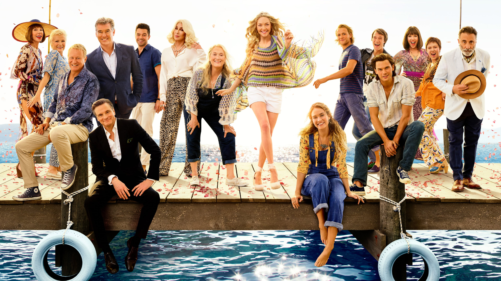

- Meryl Streep as Donna Sheridan-Carmichael, Sophie's mother, owner of the hotel Villa Donna.
- Amanda Seyfried as Sophie Sheridan, Donna's 20-year-old daughter, Sky's fiancée.
- Christine Baranski as Tanya Chesham-Leigh, one of Donna's former bandmates in Donna and the Dynamos; a rich three-time divorcee.
- Julie Walters as Rosie Mulligan, Donna's other former bandmate; an unmarried fun-loving author.
- Pierce Brosnan as Sam Carmichael, Sophie's possible father and an American architect.
- Colin Firth as Harry Bright, Sophie's possible father and a British banker.
- Stellan Skarsgård as Bill Anderson, Sophie's possible father, a Swedish sailor and travel writer.
- Dominic Cooper as Sky Ramand, Sophie's fiancé who is designing a website for the hotel.
- Niall Buggy as Father Alex, a wedding priest.
- Chris Jarvis as Eddie, a friend of Sky and Pepper.
- Ashley Lilley as Ali, a close friend of Sophie and her bridesmaid.
- Rachel McDowall as Lisa, a close friend of Sophie and her bridesmaid.
- Philip Michael as Pepper, Sky's best man who likes Tanya; a bartender
- Juan Pablo Di Pace as Petros, Harry's partner.
- Enzo Squillino as Gregoris, one of Donna's employees.
- Ricardo Montez as Stavros.